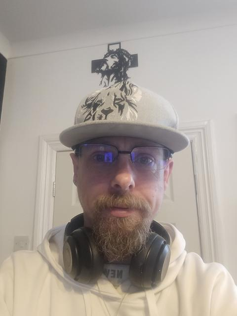

01 · Lead track
No Longer The Shadow
Recovery from inside Healthier Heroes.
Watch on YouTube ↗Press · Ember Oracle
Ember Oracle is the music project of Mark Anderson, an Iraq veteran from Barnoldswick, Lancashire. His songs tell the story of veterans' recovery from the inside: PTSD, trauma, and the long road back.

About
Mark Anderson served in HM Forces as a Class 2 Communication Systems Operator, including a tour of Iraq in 2006–07. After leaving the forces he worked in telecoms, most recently as a full fibre engineer with Openreach.
In April 2026 he began teaching himself to make music, animation and writing, releasing songs under the name Ember Oracle. He writes all his own lyrics and uses AI-assisted tools to produce the music.
His most personal work comes from his connection to Healthier Heroes, the Burnley-based organisation supporting veterans. Tracks like "No Longer The Shadow" and "See The Truth" speak directly about recovery there, about what Mark and the other veterans are going through and the strength they find in each other.
Mark is also the author of the non-fiction book A Unified Theory, a contributing poet to the anthology Poetry for the Peers, and the writer of Bloom, an animated musical feature that was shortlisted by a producer after a Stage 32 pitch session in October 2026.
Featured tracks
01 · Lead track
Recovery from inside Healthier Heroes.
Watch on YouTube ↗02
Healthier Heroes and the journey of recovery.
Watch on YouTube ↗03
The struggles veterans carry and the trauma beneath.
Watch on YouTube ↗04
The reality of PTSD for soldiers.
Watch on YouTube ↗Listen
Songs about veterans' recovery, PTSD and Healthier Heroes, released across streaming platforms — writing and lyrics throughout.
Press contact